AI Website GeneratorBiochromes are natural pigments produced by living organisms that impart color to plants, animals, fungi, and microbes. These compounds play various roles, such as attracting pollinators, protecting against UV radiation, or serving as camouflage. Common biochromes include:
1. Chlorophyll (green) – Found in plants and algae, responsible for photosynthesis.
2. Carotenoids (yellow, orange, red) – Found in carrots, tomatoes, and some birds and fish.
3. Anthocyanins (red, blue, purple) – Found in berries, red cabbage, and flowers.
4. Melanin (brown, black) – Found in human skin, hair, and animal fur.
5. Flavonoids (yellow) – Found in citrus fruits and flowers.
6. Betalains (red, yellow) – Found in beets and cactus fruits.
Examples of Natural Dyes
Natural dyes are pigments extracted from biochromes for use in textiles, art, and other applications. Common examples include:
1. Turmeric (yellow) – Derived from the root of the turmeric plant.
2. Indigo (blue) – Extracted from the Indigofera plant or similar species.
3. Madder (red) – Derived from the roots of the madder plant.
4. Saffron (yellow-orange) – Extracted from the stigmas of the saffron crocus flower.
5. Hibiscus (red, pink) – Made from dried hibiscus flowers.
6. Walnut Hulls (brown) – Produced from the husks of walnuts.
7. Pomegranate Rind (yellow-brown) – Extracted from the peels of pomegranates.
8. Beetroot (red) – Sourced from beetroot juice.
9. Cochineal (red) – A dye made from insects (though not plant-based, it's natural).
These biochromes and dyes are celebrated for their environmental sustainability and are used in applications ranging from textiles to art and cosmetics.
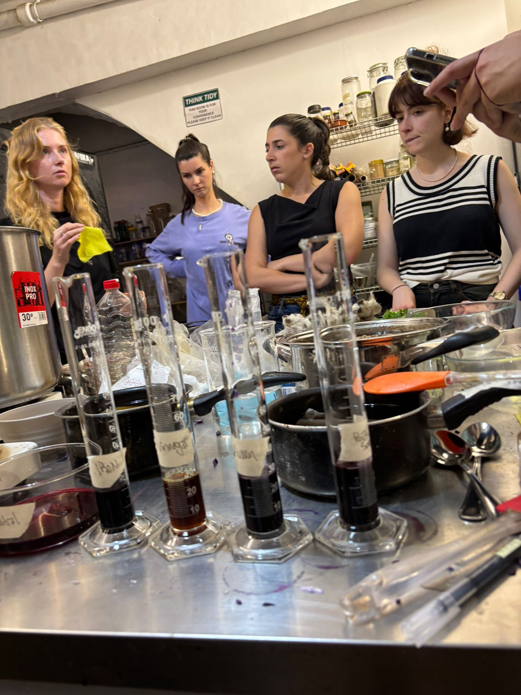
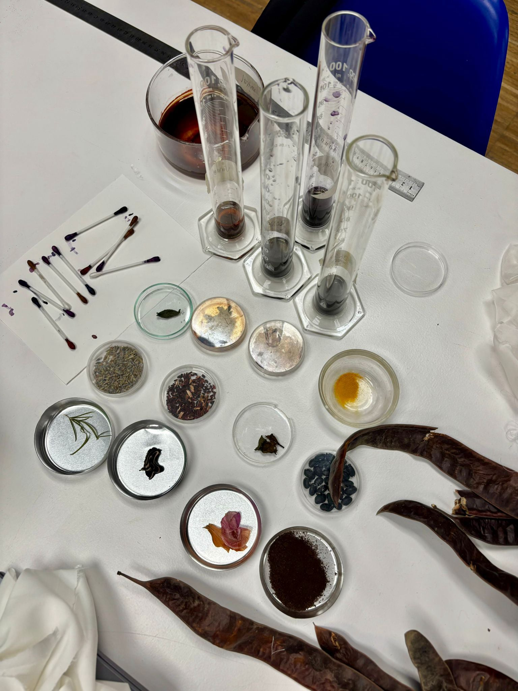
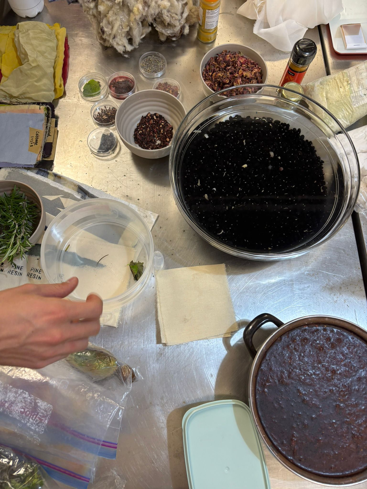
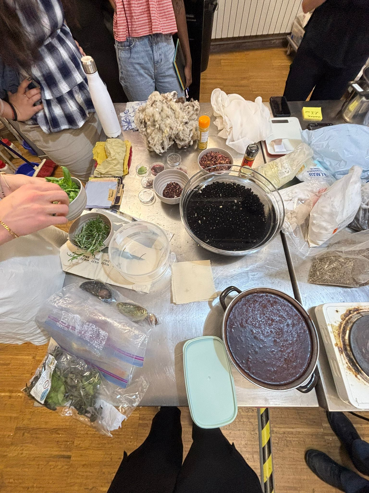
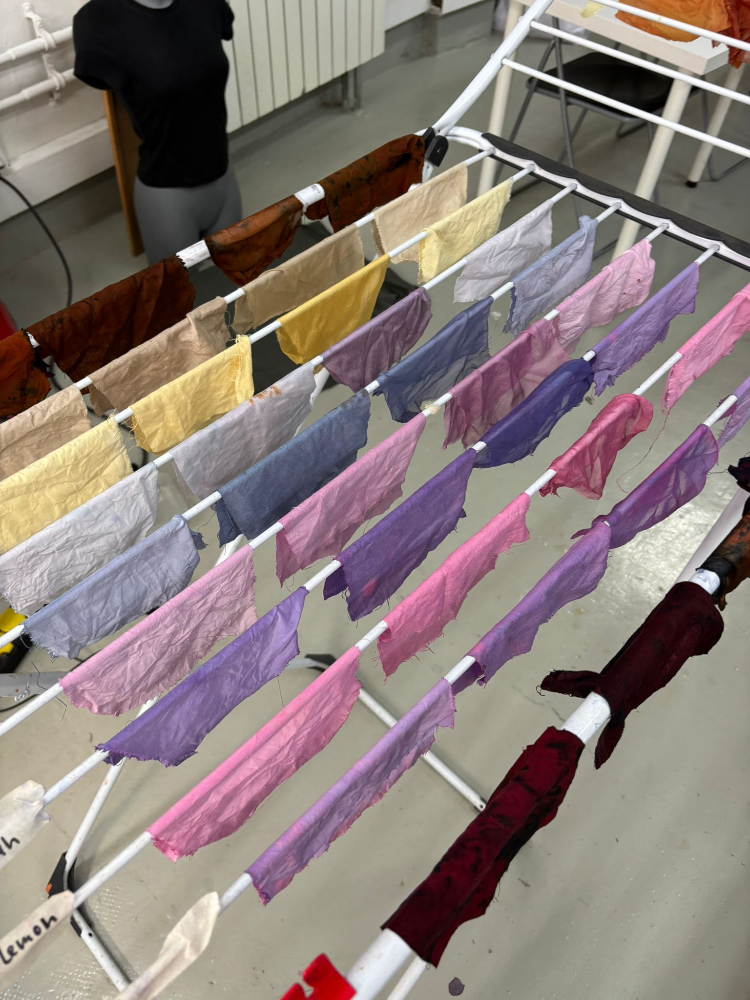
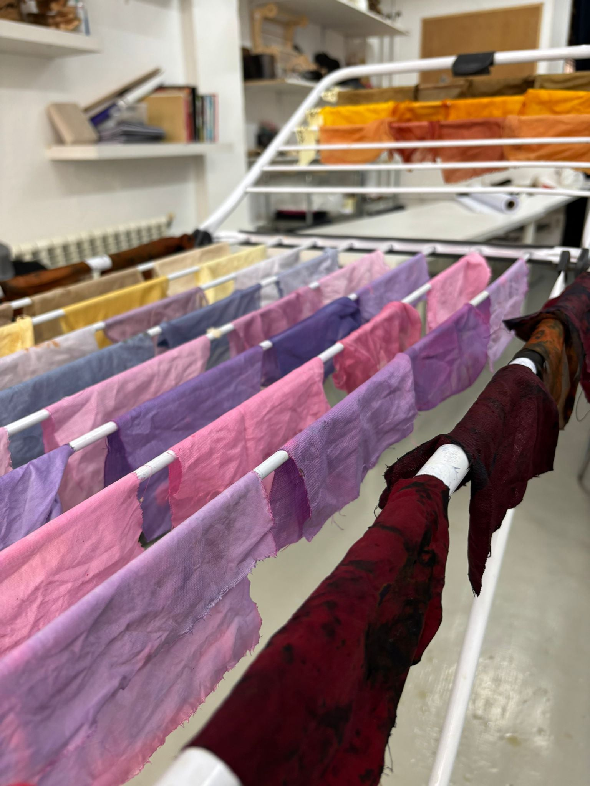
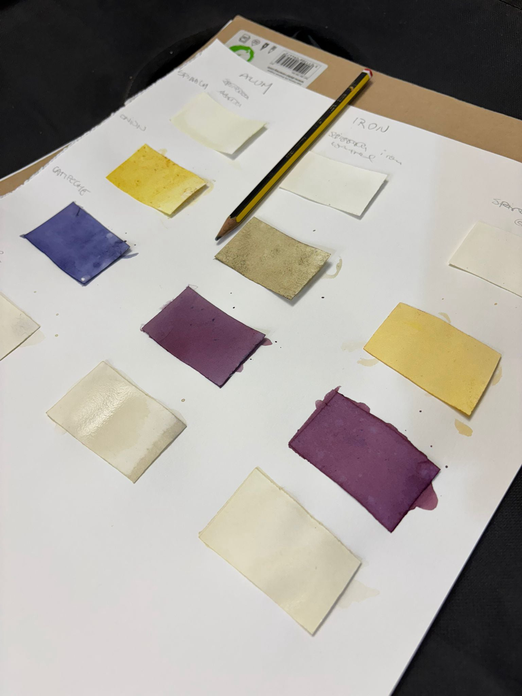
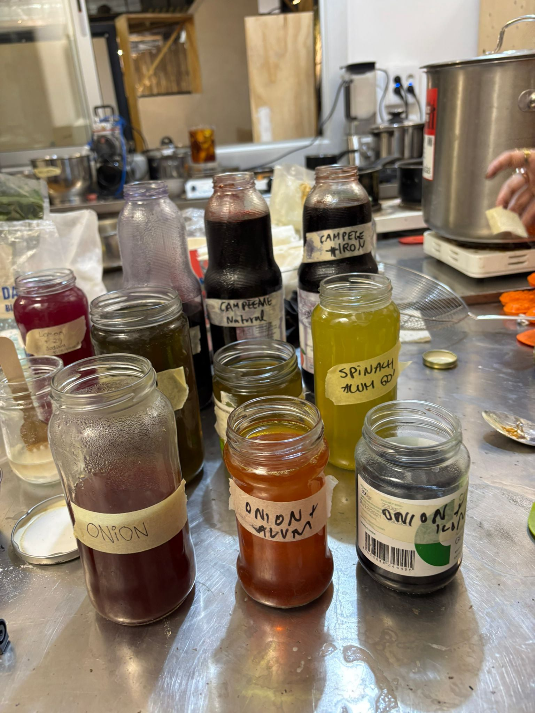
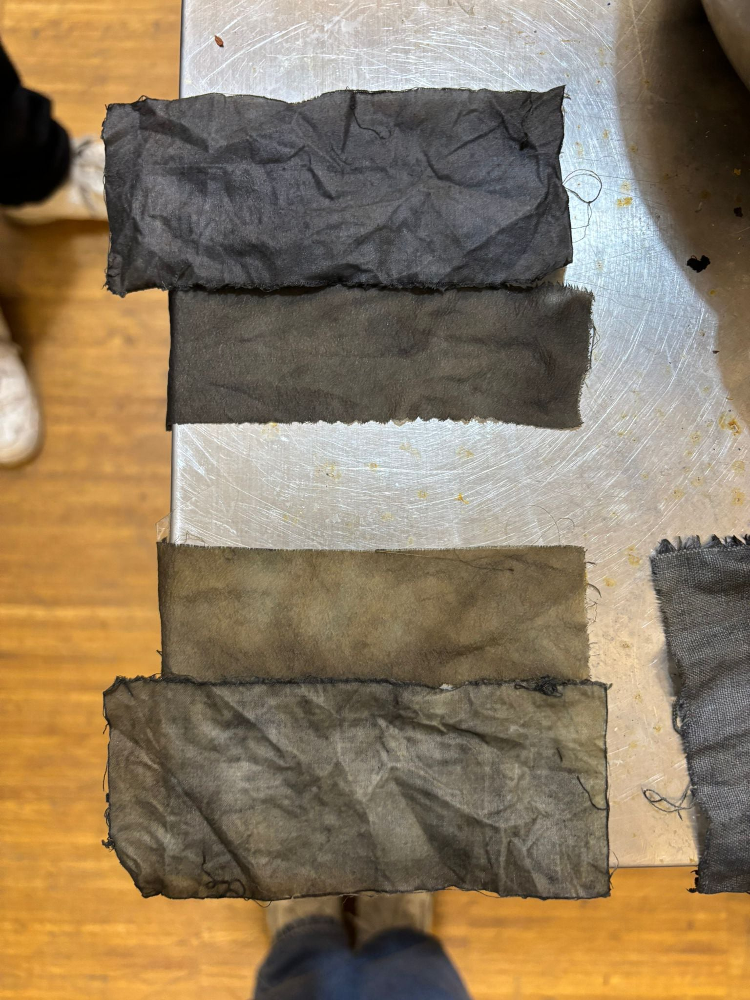
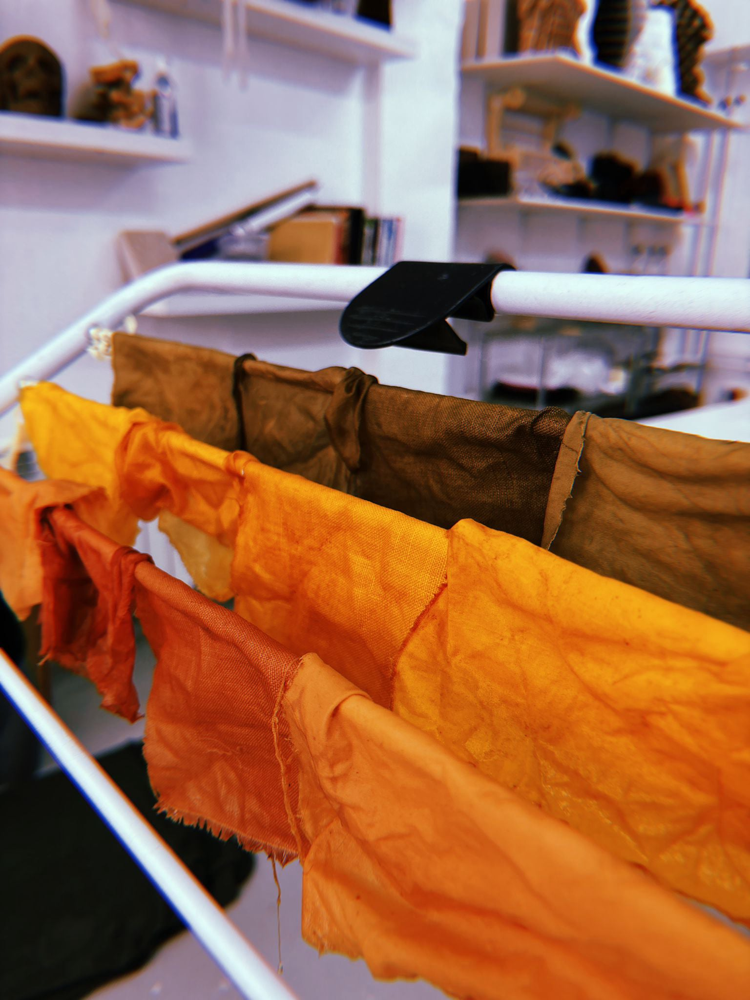
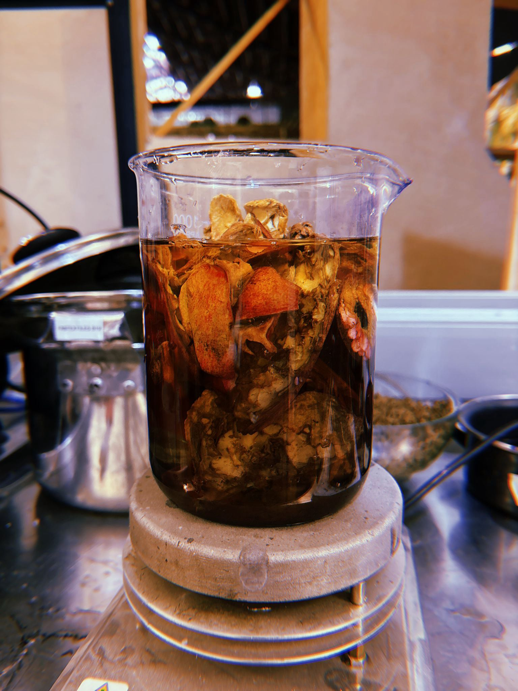
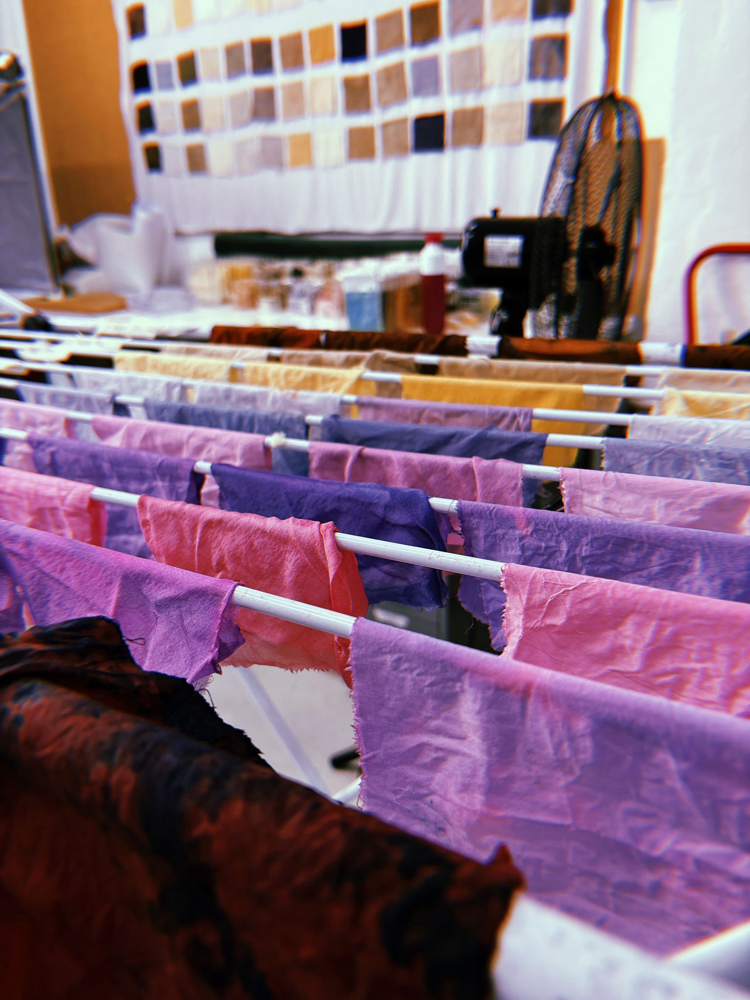
This course was my first experience in the second year, and while it didn’t directly align with my thesis, it offered valuable insights into creating colors from natural sources. The initial lecture introduced the fascinating process of making biocromes, showcasing techniques for extracting dyes from plant, insect, and even bacterial pigments.
As the week progressed, the class transitioned into a hands-on workshop where we learned to transform natural materials into inks. I chose to work with purple cabbage and was amazed by how its vibrant lilac hue evolved into different shades of dye. This process challenged my perception of color creation and revealed the intricacies involved, particularly the difficulty of producing green—a detail I had never previously considered.
Although the course didn’t directly contribute to my thesis, it provided important lessons about sustainable practices in an industry known for its environmental impact. It underscored the importance of exploring eco-friendly alternatives in textile dyeing and encouraged critical thinking about the materials we use. Overall, it was a compelling experience, and I’m eager to share the collective outcomes of our group’s experiments with natural colors.
AI Website Generator